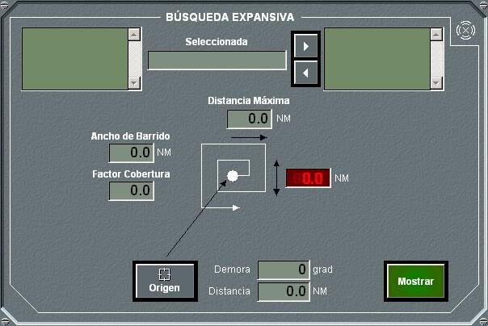

Búsquedas

Este panel general de búsquedas permite seleccionar entre tres tipos diferentes de búsqueda, Expansiva, Rectangular y Sectorial. Pulsando en cada botón se abre el panel de detalle correspondiente al tipo de búsqueda seleccionado.
Búsqueda Expansiva

En el panel de detalle de búsquedas expansivas se pueden realizar las siguientes acciones:
- Seleccionar unidades de la lista de unidades amigas añadirlas al plan, o seleccionar unidades integrantes en el plan para eliminarlas de él.
- Para un plan determinado, introducir los siguientes datos:
- Origen de la búsqueda, tomado de la posición del Hook al pulsar el botón Origen, o introducido manualmente.
- Distancia máxima de búsqueda, distancia máxima a la que llega la unidad en su maniobra desde el origen.
- Ancho de barrido y factor de cobertura de la búsqueda, con los que se calcula y se muestra el valor de “S” (separación entre dos derrotas).
- Trazar el plan en la pantalla táctica, pulsando el botón Mostrar. En la pantalla táctica aparecerá un dibujo como el siguiente, de acuerdo a los datos introducidos en el plan. La orientación del plan depende de la dirección del viento como se muestra en la figura. Si la intensidad del viento es nula (no hay viento) se considera dirección del viento 0 grados.

Búsqueda Rectangular
En el panel de detalle de búsquedas rectangulares se pueden realizar las siguientes acciones:
- Seleccionar unidades de la lista de unidades amigas añadirlas al plan, o seleccionar unidades integrantes en el plan para eliminarlas de él.
- Para un plan determinado, introducir los siguientes datos:
- Origen de la búsqueda, tomado de la posición del Hook al pulsar el botón Origen, o introducido manualmente.
- Longitud y ancho de la búsqueda, en millas, que configuran los dos lados del rectángulo.
- Dirección, en grados, que determina la orientación del rectángulo respecto al norte.
- Ancho de barrido y factor de cobertura de la búsqueda, con los que se calcula y se muestra el valor de “S” (separación entre dos derrotas).
- Trazar el plan en la pantalla táctica, pulsando el botón Mostrar. En la pantalla táctica aparecerá un dibujo como el siguiente, de acuerdo a los datos introducidos en el plan.

Búsqueda Sectorial
En el panel de detalle de búsquedas sectoriales se pueden realizar las siguientes acciones:
- Seleccionar unidades de la lista de unidades amigas añadirlas al plan, o seleccionar unidades integrantes en el plan para eliminarlas de él.
- Para un plan determinado, introducir los siguientes datos:
- Origen de la búsqueda, tomado de la posición del Hook al pulsar el botón Origen, o introducido manualmente.
- Direcciones inicial y final, en grados, que limitan el sector de búsqueda.
- Radio de la búsqueda, que determina la distancia máxima a la que llega la unidad en su maniobra desde el origen.
- Ancho de barrido y factor de cobertura de la búsqueda, con los que se calcula y se muestra el valor de “S” (separación entre dos derrotas).
- Trazar el plan en la pantalla táctica, pulsando el botón Mostrar. En la pantalla táctica aparecerá un dibujo como el siguiente, de acuerdo a los datos introducidos en el plan.